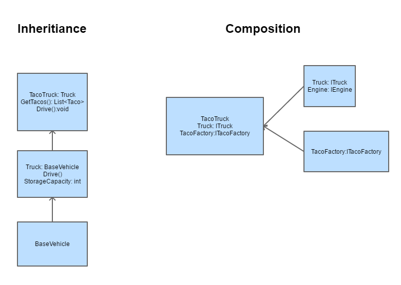
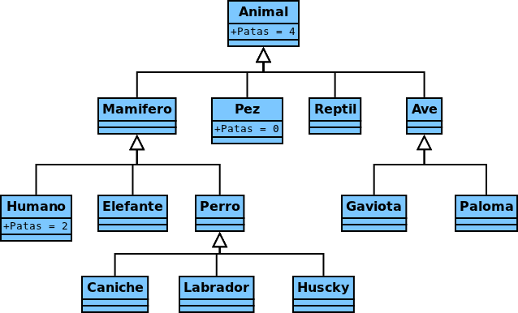
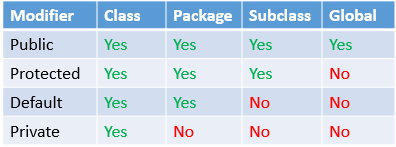

Herència
L’herència permet a una classe nova crear-se a partir d’una classe existent. La nova classe (subclasse) “hereta” els atributs i mètodes de la classe primària, i a més a més, té la possibilitat d’incorporar nous atributs i mètodes específics a la subclasse.
Aquesta particularitat permet crear una estructura jeràrquica de classes cada vegada més especialitzada. L’herència es basa en la reutilització de classes on es crea una classe nova incorporant atributs i mètodes de la classe pare. Els mètodes heretats poden ser sobreescrits i adoptar un comportament nou o ampliant-ne la seva funcionalitat. Aquesta reutilització permet estalviar molt de temps i adoptar components creats i ja testats.
Conceptes:
- Superclasse: Classe primària o existent en l’herència.
- Subclasse: classe nova i resultant d’aplicar herència a una altra classe.
- Especialització: Procés que permet estendre d’una classe pare a una classe filla, ampliant atributs i mètodes.
- Generalització: Procés de navegar de les classes filles a la classe pare. En la classe pare trobarem els atributs i mètodes comuns a totes les subclasses.

Herència simple
Java permet l’herència simple: qualsevol classe només té una classe pare, no permet l’herència múltiple com sí permeten altres llenguatges de programació com el C++. Això ens planteja el problema que a vegades pels requisits de la nostra aplicació és necessari simular l’herència múltiple fent ús d’interfícies. Per a més informació: problema del diamant
Relació “és un” vs “conté un”
L’herència és una relació d’extensió d’una classe més específica respecte una classe genèrica, això ens porta a que la classe filla ÉS UNA classe pare, però amb les funcionalitats ampliades/exteses/modificades. A vegades quan es programa existeix el dubte de confondre aquesta relació amb una relació de composició CONTÉ UN, que erròniament entenguem com a subclasse “una part” de la classe principal. Un exemple seria el següent:

Com podeu veure en l’herència es parteix d’un BaseVehicle, que a la vegada s’especialitza en un Truck, i a la vegada s’especialitza en un TacoTruck. TacoTruck “ÉS UN” BaseVehicle, TacoTruck és una extensió de BaseVehicle. En canvi Truck “CONTÉ UN” engine, engine és una part de Truck, no podria substituir l’engine per un truck i que es comporti de la mateixa manera.
Una vegada es conceptualitza el problema a resoldre pots crear el teu arbre jeràrquic. Un exemple amb animals seria:

Implementació
Per tal d’indicar que una classe és una herència utilitzarem la paraula extends en la definició de la classe. Per exemple si tenim una classe pare Persona i dos classes filles Alumne i Professor, ho faríem de la següent manera:
public class Persona{
...
}
public class Alumne extends Persona {
...
}
public class Professor extends Persona{
...
}
Si la superclasse no està al mateix package que la subclasse, s’ha d’importar la classe ja que sinó no en tindria visibilitat.
java.lang.Object
Una subclasse pot ser a la vegada superclasse d’altres classes i crear així un àrbre jeràrquic de classes. En Java totes les classes hereten d’una classe mare, la classe arrel de totes és java.lang.Object. Hi ha un conjunt de mètodes que tenen TOTES les classes de Java, inclús les que programeu vosaltres, aquí teniu la descripció de Java Oracle referent a la classe Object.
Totes les classes per defecte extenen de java.lang.Object, per tant poden fer ús dels mètodes que conté aquesta classe, per exemple:
- toString(): retorna una definició dels atributs en forma de String, aquesta definició la podeu “sobreescriure i modificar i adaptar a les vostres necessitats”.
- equals(Object o): mètode per comparar l’Objecte o amb l’implícit(this), per defecte retorna true si es tracta del mateix objecte (mateixa referència) i false si no. Si volem comparar els atributs per comprovar que es tracta dels mateixos valors serà necessari “sobreescriure” el mètode i fer que adopti el comportament que volem, això passa per exemple amb el cas de la classe String, ens retorna true si els dos Strings tenen el mateix valor i no si fan referència al mateix objecte.
- clone(): s’utilitza per realitzar una còpia de l’objecte. Veurem altres maneres de realitzar còpies.
És el mateix posar en la definició extends Object que no posar-ho.
final
A vegades, pels requisits de la nostra aplicació no ens interessa que hi pugui haver una herència en una classe, en aquests casos indicaríem mitjançant l’atribut final. Per exemple si vull que Persona sigui una classe final i que per tant no es pugui extendre ho marcaria de la següent manera:
public final class Persona{
...
}
El mateix passa quan apliquem final a un mètode o a un atribut.
- En el cas del mètode si en la definició posem que és final no ens permetrà en subclasses sobreescriure’l, no el podrem modificar.
package paquet.exemplefinal;
public class classeOrigen {
public final void mostraInfo() {
System.out.println("mostraInfo");
}
}
package paquet.exemplefinal;
public class classeFilla extends classeOrigen {
public void mostraInfo() {
System.out.println("mostra una altra info");
}
}
En aquest cas donaria un error de compilació ja que intentem sobreescriure un mètode que és definit com a final en la classe pare.
- En el cas d’un atribut final un cop inicialitzat no ens permetrà tornar-lo a modificar canviant-li el valor, s’utilitza per definir constants.
public class CanviVariable {
private final int enter=1;
public CanviVariable(int enter){
this.enter = enter;
}
}
public class CanviVariable2 {
public static void main(String[] args){
final int enter = 0;
enter = 2;
}
}
Els casos anteriors donarien error ja que volem canviar el valor d’una variable que s’ha declarat final i ja té valor. En canvi, el cas següent no ens donaria cap error, ja que quan creem l’objecte donem valor per primer cop a aquesta variable, això sí, no li podrem canviar el valor en l’execució de tot el programa al ser final.
public class CanviVariable {
private final int enter;
public CanviVariable(int enter){
this.enter = enter;
}
}
Visibilitat
Fins el moment hem observat com els atributs i mètodes públics són accessibles des de fora de la pròpia classe i els que són privats són només accessibles desde dins la pròpia classe.
Amb l’herència apareix la visibilitat protected, que permet tenir visibilitat d’atributs i mètodes situats en:
- la mateixa classe
- les seves subclasses
- altres classes del mateix package

Com s’observa existeix l’opció default quan no indiquem cap atribut de visibilitat, les classes declarades com a default tenen accés a totes les classes del propi package.
Sobreescriptura
Més amunt hem comentat el concepte de sobreescriptura, aquesta és una de les característiques polimòrfiques que tenim amb els llenguatges POO.
La sobreescriptura ens permet modificar mètodes definits en la superclasse. Per tant ens permet canviar el comportament de mètodes que ja estan definits en la classe pare.
Quan sobreescrivim un mètode podem utilitzar la paraula @Override sobre la definició del mètode per indicar-li a Java que sobreescrivim un mètode la superclasse.
Ex, sobreescrivim el comportament que ens dóna java.lang.Object per toString():
public class Enter{
int valor;
@Override
public String toString() {
return "El valor d'Enter és:" + this.valor;
}
}
Constructors i super
Quan definim els mètodes constructors de les subclasses, és necessari primer cridar la constructora de la classe pare, això és possible gràcies a super() o super(parametres). Quan es crea un fill primer sempre es comença inicialitzant les variables del pare i després s’inicialitzen les del fill. Si no posem cap mètode super, per defecte intentarà buscar super() en el pare, si no existís hi hauria un error de compilació.
public class Persona{
String dni;
public Persona(String dni){
this.dni = dni;
}
}
public class Alumne extends Persona{
int matricula;
public Alumne(String dni, int matricula){
super(dni);
this.matricula = matricula;
}
}
//Error de compilació ja que la constructora Persona() com a tal no existeix
public class Alumne extends Persona{
int matricula;
public Alumne(int matricula){
super();
this.matricula = matricula;
}
}
Exemple
Realitzem un exemple de com seria una herència amb classe pare Producte i classe Filla ProducteDescompte.
public class Producte {
protected String nom;
protected double preu;
public Producte(String nom, double preu) {
this.nom = nom;
this.preu = preu;
}
public void anunci() {
System.out.println("Hola sóc el producte " + nom);
}
public double valorProducte() {
return preu;
}
}
public class ProducteDescompte extends Producte {
private int descompte;
public ProducteDescompte(String nom, double preu, int descompte) {
super(nom, preu);
this.descompte = descompte;
}
@Override
public void anunci() {
super.anunci();
System.out.println( "Tinc un descompte de " + descompte+"%");
}
@Override
public double valorProducte() {
return preu - (preu*descompte)/100;
}
public void rebaixaNouDescompte(int rebaixa){
this.descompte = this.descompte - rebaixa;
}
public void augmentaNouDescompte(int augment){
this.descompte = this.descompte + augment;
}
}
public class Programa {
public static void main(String[] args) {
Producte p = new Producte("Llapis", 100.0);
p.anunci();
System.out.println("El preu del producte és " + p.valorProducte());
System.out.println();
ProducteDescompte p1 = new ProducteDescompte("Llapis rebaixat", 100.0, 10);
p1.anunci();
System.out.println("El preu d'un nou producte rebaixat és " + p1.valorProducte());
System.out.println();
p1.augmentaNouDescompte(10);
p1.anunci();
System.out.println("El preu del producte després de modificar la rebaixa és " + p1.valorProducte());
}
}